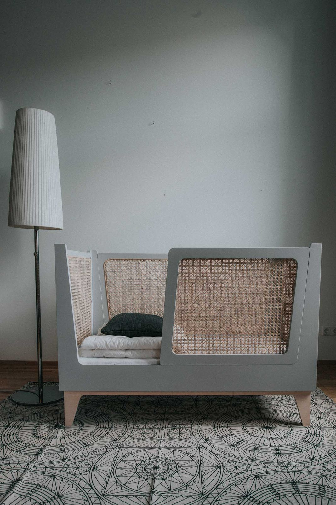
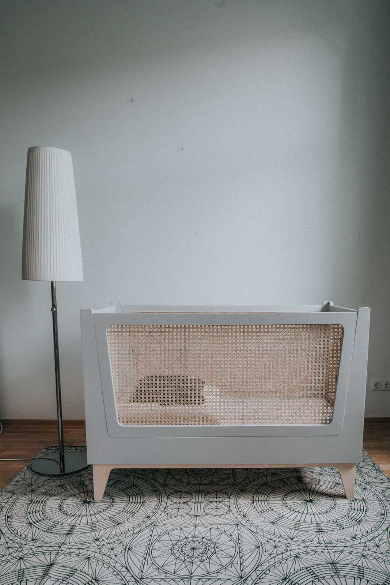
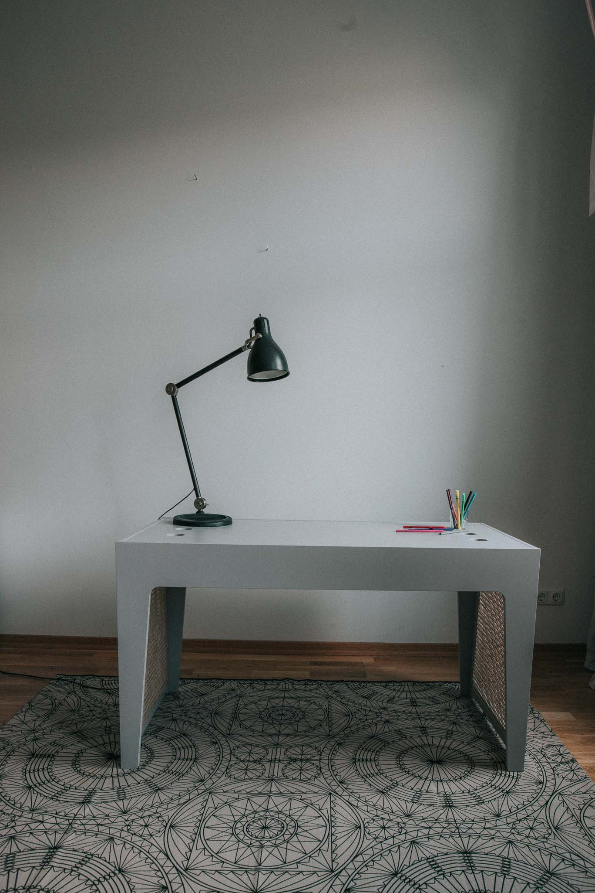
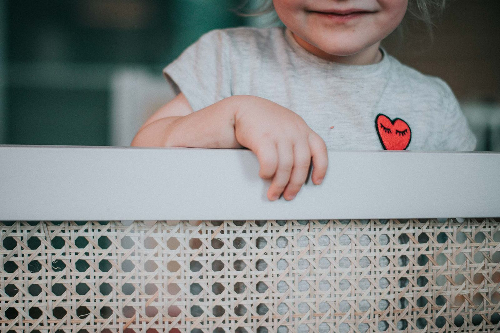
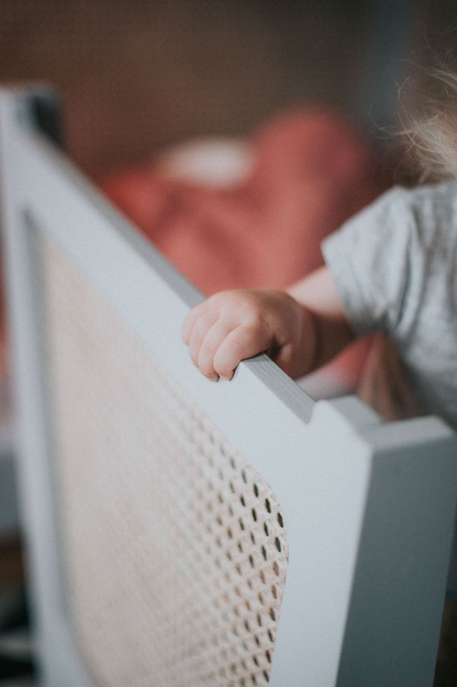
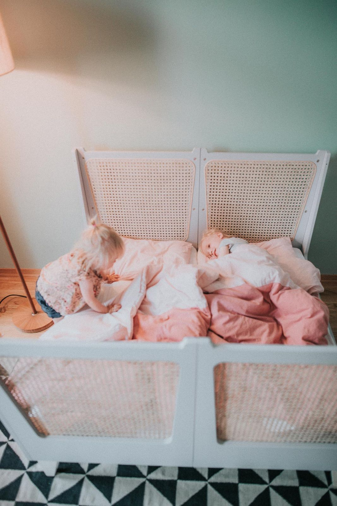
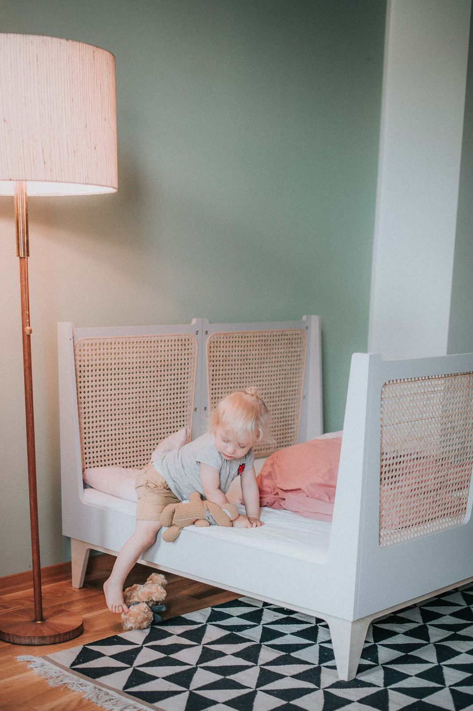

Ein Kinderbett, das mitwächst — und auch als Zwillingsbett funktioniert. Entworfen unter dem Label Räuber & Töchter, Ullis eigene Produktmarke. Wiener Geflecht als prägendes Material verleiht dem Bett Leichtigkeit und Wärme zugleich.
Das Bett ist patentiert. Seine Konstruktion erlaubt es, zwei Einzelbetten zu einem Doppelbett zu verbinden — oder zurück. Der Clou: Das Bett wird zum Schreibtisch, wenn das Kind zu alt für das Bett ist. Modular und nachhaltig. Dazu passend: eine Sitzbank, die die Formensprache von Bett und Tisch aufnimmt. Jedes Stück ist in Handarbeit gefertigt, jedes Detail durchdacht.
Räuber & Töchter steht für Möbel, die Kinder ernst nehmen — in Material, Form und Haltbarkeit. Kein Wegwerfprodukt, sondern ein Begleiter durch die Kindheit.
Einzelbett — Seitenansicht mit Wiener Geflecht

Frontansicht des Kinderbettes

Detail — Gitter mit Wiener Geflecht

Kinderschreibtisch — passend zur Serie
Das patentierte Zwillingsbett in Aktion

Wiener Geflecht — Struktur und Haptik

In Handarbeit gefertigt — Flechtdetail

Zwillingsbett — Draufsicht

Geborgenheit — Kind im Bett
Triptychon — Produkt, Material, Mensch
Kindertisch mit BallonlampenKindertisch — Rückansicht mit Geflecht
Fotos: Yasmina Aust
Möbel, die Kinder ernst nehmen
Du suchst durchdachte Kindermöbel oder ein individuelles Produktdesign? Lass uns sprechen.